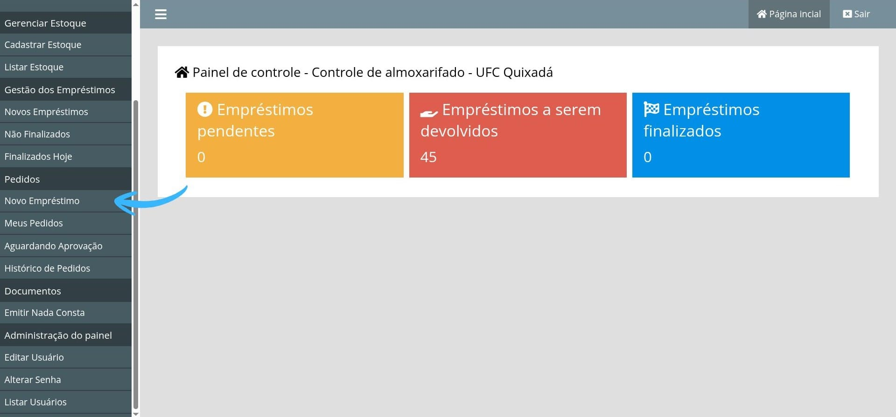
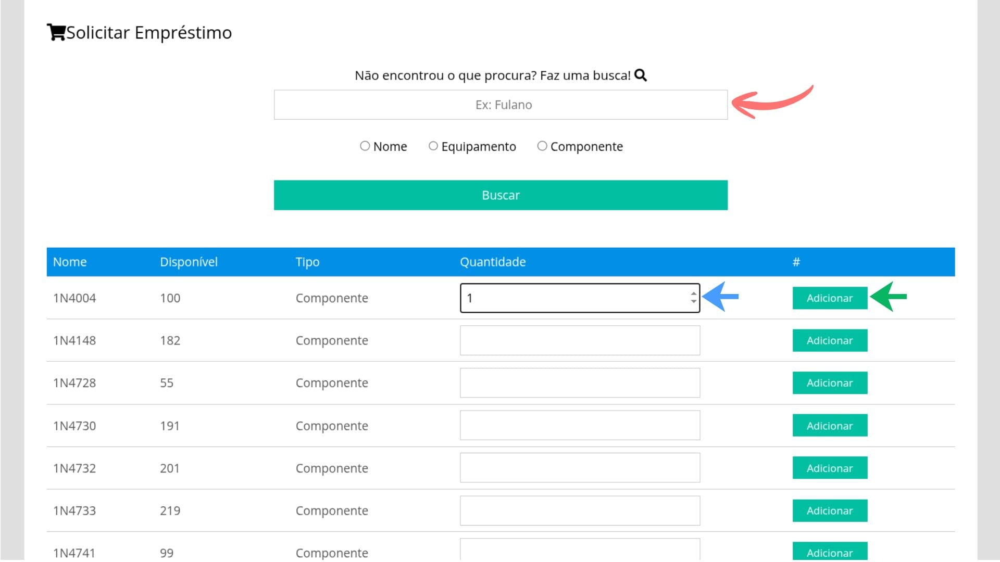
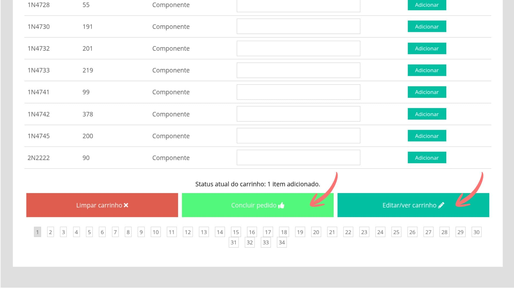
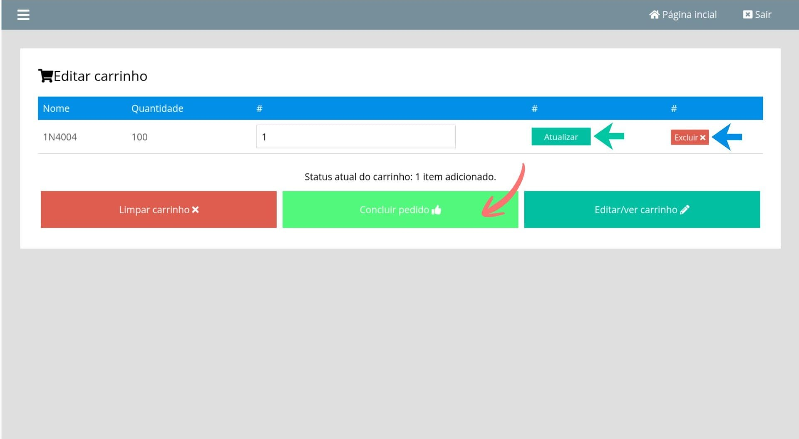
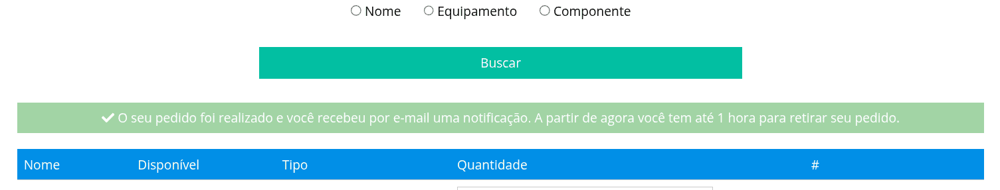

Como fazer um pedido
Siga o passo a passo abaixo para solicitar o empréstimo de um item, adicionar a quantidade desejada ao carrinho e concluir o pedido no sistema.
Passo 1
Após entrar no painel, acesse a opção Novo Empréstimo no menu lateral.

Passo 2
Na página de solicitação, pesquise pelo item desejado. Você pode buscar por nome, equipamento ou componente. Depois, informe a quantidade e clique em Adicionar.

Passo 3
Após adicionar um item, o sistema exibirá o status atual do carrinho. Se tudo estiver correto, clique em Concluir pedido. Se precisar alterar os itens, clique em Editar/ver carrinho.

Passo 4
Na tela de edição do carrinho, você pode alterar a quantidade do item, clicar em Atualizar ou remover o item clicando em Excluir. Quando terminar, clique em Concluir pedido.

Passo 5
Ao concluir, o sistema exibirá uma mensagem informando que o pedido foi realizado. A partir desse momento, aguarde a notificação por e-mail e acompanhe o andamento do pedido pelo sistema.

Ainda possui dúvidas? Procure ajuda presencialmente na sala do almoxarifado.